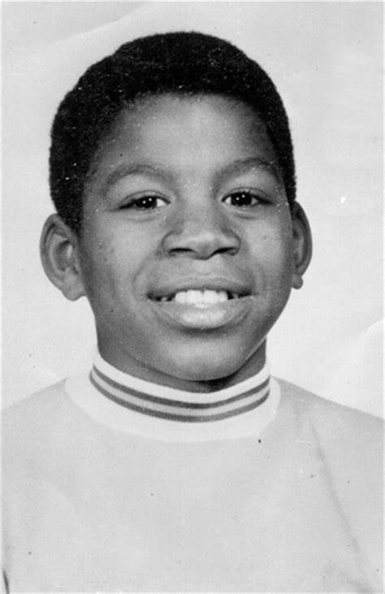

Infancia:
Johnson creció en Míchigan, y desde pequeño le gustó jugar al baloncesto. Se levantaba temprano para ir a jugar antes del colegio, y frecuentemente iba a los sitios botando un balón. Según su madre, mostraba mucho entusiasmo en todo lo que hacía. Cuando por fin se unió al equipo de baloncesto de su instituto, logró con 15 años un triple-doble con 36 puntos, 16 rebotes y 16 asistencias. Después de esto, un periodista deportivo le denominó "Magic" por primera vez. Sufrió la pérdida de un compañero de equipo en un accidente de coche, por lo que se comprometieron a ganar el campeonato estatal como homenaje a Reggie Chastaine, el jugador fallecido, algo que lograron en la prórroga de la final.En su último año de high school el equipo logró un balance de 27 victorias y 1 única derrota, promedió 28,8 puntos y 16,8 rebotes y ganó de nuevo el título estatal.
